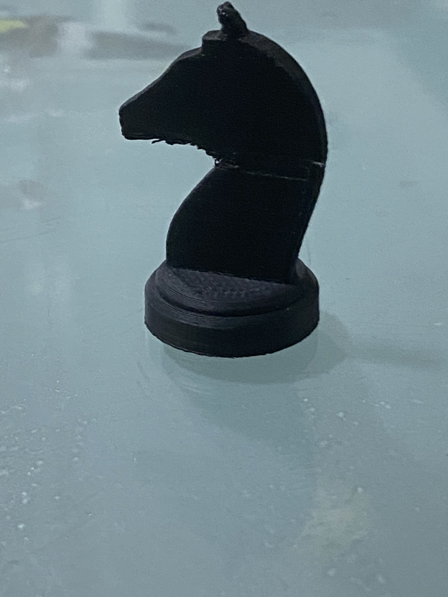

Knight Chess Piece Print
Computer Aided Drawing
In terms of using CAD softwares, I have opted to use Autodesk Fusion 360 for this chess piece.
Firstly, I imported a open source silhouette of a knight chess piece from the Internet.

Then I traced the image of the knight as 2 pieces, one being the horse itself and the other being the base.
Finally I extruded the 2 parts seperatly, with the top half being a symmetrical extrude and the bottom half as a revolve.
An interactive version of the chess piece can be viewed below:
Slicing
For school based printing, I have used the Ultimaker 2+ provided in school, and Tevo Tarantula printer at home.

Inside Cura, the chess piece was scaled to 35mm height and the rest is scaled proportionally.
Ultimaker 2+
The slicer program I have used is Ultimaker Cura 4.11.0.With the Ultimaker 2+, I did a quick print of the aformentioned chess piece.
Settings used on Ultimaker 2+ for chess piece:
Tevo Tarantula
I have reprinted the chess piece with the Tevo as I wanted a smoother finishing for the chess piece. I have alted the settings for it for a nice print finish.
Settings used on Tevo Tarantula for chess piece:
Printing
Time lapse was taken on the Tevo Tarantula printer.
Finished product
